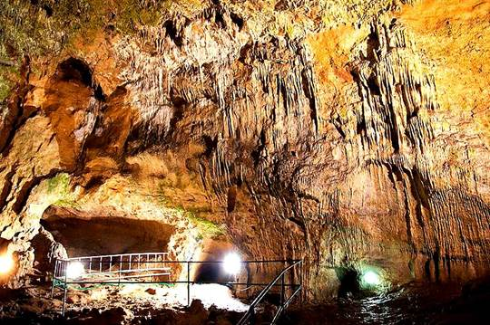
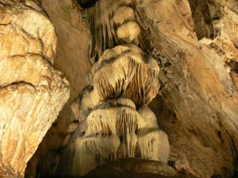
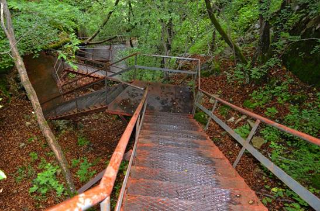

Пещерата "Ухловица" е един от най-красивите подземни дворци на България. Името й идва от
"улулица", което означава нощна граблива птица. Намира се в местността Сините вирове, на 3км североизточно от село Могилица. В
"Ухловица" ви очаква великолепна феерия от хеликтити във формата на кристали и дендритни образувания, които приличат на морски
корали.
|
 |
|  |
Пещерата завършва със 7 красиви езера, които рано на пролет се пълнят с вода. А към най-голямото
от тях ще видите как се спускат каменните струи на брилянтен водопад. Приключението ви ще започне с изкачване на 180 стъпала,
които се извиват нагоре в родопската гора. Те ще ви отведат до самия вход на пещерата. Тя се състои от два етажа, които са свързани
помежду си с метална стълба. На втория етаж се намира Залата на пропастите, от която се спускат четири дълбоки ями към долното
ниво.
|
Преминаването през тях по витите стълби ще повиши адреналина ви на макс. Преживяването си заслужава,
защото ще ви разкрие най-красивата част от пещерата. Когато стъпите на твърда земя, няма да откъснете очи от невероятните каскади на
синтровите езерца, които се намират там. Какво ще видите още ли? Това ще запазим в тайна, която трябва да разгадаете сами.
На добър път и успех!
|
 |